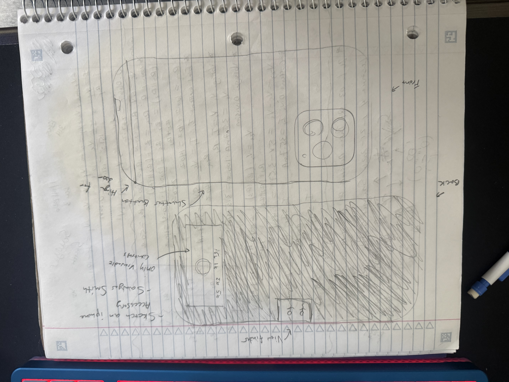

Purpose
This project explores a phone accessory concept that changes how you take photos by removing the normal full screen preview. The goal is to make modern phone photography feel more like using a compact film camera, where you commit to shots without constantly checking and correcting in real time.
The idea
The accessory is a 3D printed phone case that intentionally blocks almost the entire display. Only a small viewfinder window remains visible near the top center of the screen, similar to where a film camera viewfinder would be. Below that, only the essential camera controls remain available. Everything else is physically covered by the case.
To make the tiny viewfinder actually work, the case pairs with a small camera application. The app shrinks the live camera preview into a small top centered box that aligns with the physical viewfinder opening. This matters because the default iPhone Camera app cannot be forced into a tiny preview layout.
A key part of the concept is interaction through physical controls instead of tapping a big on screen shutter. The case is designed so you can take photos using the side camera button found on newer iPhones. This reinforces the film camera vibe because your hand action feels closer to pressing a real shutter button. If the phone model does not have that button, the concept can still rely on other built in hardware shutter options, but the dedicated camera button is the cleanest version.
The case also includes a hinged loading door. Instead of snapping the phone into a tight shell, you open the hinge, slide the phone in, then close the door. This makes it feel more like loading a camera body and reduces the sense that it is just a typical case.
Sketch

Who uses this and why
This is for people who like taking photos but dislike how phones encourage endless retakes and over correction. It is also for people who enjoy constraints and novelty, like film photographers, street photographers, and anyone who wants a playful tool that changes behavior. Even as a gag, the accessory creates a real difference in the experience because it removes the main feedback loop that phones train you to rely on.
What could make the product better and why
The biggest improvement is tuning the viewfinder experience so it feels intentional instead of frustrating. The viewfinder window should be positioned and sized so you get just enough information to aim while still feeling constrained. The app experience should also be consistent and minimal, with the preview locked into the same position every time and unnecessary interface elements removed.
Another improvement is making the physical interaction feel more camera like. The hinge and door can make insertion satisfying, and the shutter input should feel reliable and natural. If the case also looks like a compact camera, with a lens ring around the camera bump and a simple body silhouette, the concept reads instantly and becomes more than a joke.
Does anyone really care and if so why
Yes, because this product targets a real feeling. People often say film is more fun because it is slower and more committed. This accessory imitates that behavior without requiring film or a separate camera. It also creates a memorable novelty factor. Even if users only use it occasionally, it is the kind of accessory people talk about, bring to events, and use when they want a different look or experience.
Is this marketable and if so how
It is marketable as a niche lifestyle accessory. The pitch is that it forces a film style shooting mindset, makes the phone feel like a dedicated camera, and produces a distinct experience rather than just protection. It could be marketed toward film and street photography communities, content creators who want a gimmick that changes how they shoot, and gift buyers looking for something unusual. The concept also supports multiple versions, such as different viewfinder sizes, different exterior styles, and compatibility across phone models.
This is a private blog for course notes and reflections. Content is not indexed or publicly listed.